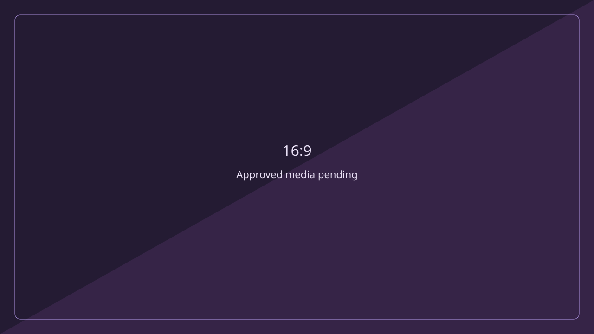
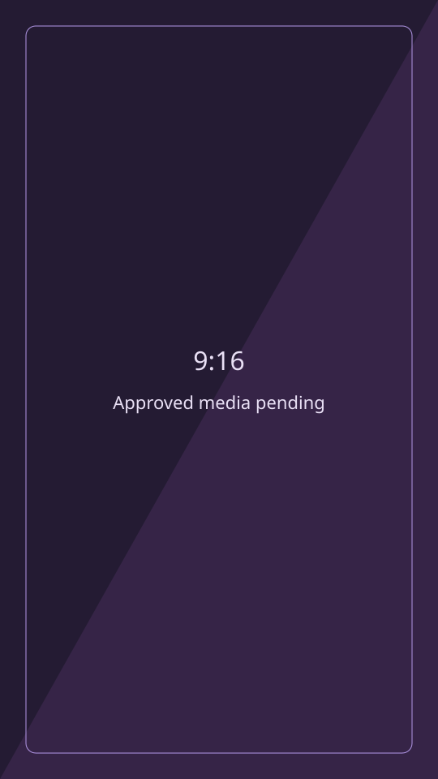

Community / Media Production
Behind the Lens: DevFest Cyprus 2026
A developer community, seen from behind the camera. My volunteer Camera Operator 2 assignment with GDG Cyprus.
OVERVIEW
DevFest Cyprus 2026 was scheduled for 31 October at the University of Nicosia, organised by GDG Cyprus. This case study documents my assigned contribution as a volunteer camera operator.
The documentary focus: community and developer culture, AI talks, speaker interviews, audience reactions, networking, merch and B-roll. Approved media and final results are pending.
MY ROLE
My role was Volunteer, Camera Operator 2, using a DJI Osmo Pocket 4. My assignment was behind the camera, including filming interviews; I was not the interviewer.
Event organisation belonged to GDG Cyprus. This contribution does not include conducting interviews, editing final deliverables or building an event product.
PLANNED / ASSIGNED COVERAGE
The assigned schedule below records the plan, rather than confirming completed recordings. All times are local to Cyprus on 31 October 2026.
- 09:00–09:30 — Registration and arrivals.
- 09:30–09:45 — Orestis Ioannou interview: camera coverage.
- 10:40–11:10 — Orestis Ioannou presentation.
- 13:20–13:35 — Georgios Panagiotou interview: camera coverage.
- 16:30–17:00 — Closing networking, with shared and flexible coverage.
PRODUCTION APPROACH
My planned approach was to connect the talks and interviews with the quieter details around them: arrivals, reactions, conversations and the spaces where the community gathered.
The coverage plan balanced speaker footage with contextual B-roll. Landscape (16:9) and portrait (9:16) gallery spaces below allow for different viewing formats; they do not imply that finished edits exist.
GALLERY
Awaiting approved media. These locally created graphic placeholders are not event photographs or recordings.


REFLECTION
Post-event reflections and final results are pending. I will add observations once I have reviewed my contribution and confirmed what can be shared publicly.
CREDITS
- Event organiser: GDG Cyprus.
- Venue: University of Nicosia.
- Volunteer, Camera Operator 2: Nicolas Kleovoulou.
- Speakers named in my assigned coverage: Orestis Ioannou and Georgios Panagiotou.
Gallery artwork was created locally for this portfolio. Event recordings and photographs will be added only after publication rights and approval are confirmed.